MIT S.M. Thesis · 2025
1Massachusetts Institute of Technology
In weather forecasting, the WeatherBench benchmark catalyzed progress by providing a common evaluation protocol that enabled fair comparison across deep learning architectures. No equivalent exists for generative data assimilation (DA) — the task of integrating sparse, real‑world observations into atmospheric fields using learned priors. Existing generative approaches have been evaluated under disparate, often idealized conditions (typically synthetic pseudo‑observations sampled from the grid), making it hard to compare design choices.
This thesis establishes the first unified benchmark for generative weather DA on real, noisy station observations. We evaluate flow‑matching methods (Flow Guidance, D‑Flow, FlowDPS), diffusion (Diffusion‑SDA), and classical 3D‑Var, along with latent‑space variants of Flow Guidance and 3D‑Var, under a single experimental protocol: 11,849 ground weather stations from NCEP MADIS (Meteorological Assimilation Data Ingest System) across CONUS (contiguous United States), ERA5 reanalysis fields for four surface variables (10 m u- and v-wind, 2 m temperature, 2 m dewpoint), 360 evaluation snapshots in 2023, and consistent train/val/test station splits with 1,778 held‑out test stations.
The central finding is that guidance with a pretrained generative prior is an effective recipe for weather DA on real observations. Starting from pure Gaussian noise and with no access to ERA5 at inference, Flow Guidance outperforms 3D‑Var (35.7 % vs. 33.3 % root-mean-square error (RMSE) reduction relative to ERA5) despite 3D‑Var being given the ERA5 field twice, both as background regularizer and as initial condition. The learned prior carries more information about atmospheric state structure than the combination of background covariance and background field in classical DA.
Flow Guidance (35.7 %) exceeds 3D‑Var (33.3 %) in RMSE reduction over ERA5, without ERA5 at inference. The generative prior encodes atmospheric structure more richly than $\mathbf{B} + \bar{\mathbf{x}}_b$.
Both are instances of the same guidance template $\nabla\log p(\mathbf{x}\mid\mathbf{y}) \approx \nabla\log p(\mathbf{x}) + \nabla\log p(\mathbf{y}\mid\mathbf{x})$ with different network parameterizations. Flow matching integrates accurately but has a weaker, indirectly‑derived score; diffusion has a strong Langevin corrector but a less accurate predictor. Each framework compensates for its weaker component through its stronger one, leaving them at empirical parity.
Removing it costs $-9.7$ to $-10.6$ pp on $T_{2\mathrm{m}}/D_{2\mathrm{m}}$ (dense) and $-16.6$ to $-20.7$ pp under sparsity, but barely touches wind. A $\sim\!2.4\times$ normalized‑space residual imbalance explains why off‑manifold drift disproportionately hurts thermodynamic variables.
A spatial‑mixing‑only autoencoder matches a variable+spatial mixer on both reconstruction and assimilation, with 4 × fewer AE parameters.
Under sparsity, latent Flow Guidance matches pixel Flow Guidance at $\sim 40\%$ lower memory and $\sim 19\%$ lower wall‑clock time.
At the median 5‑NN station distance (48 km), Flow Guidance and Diffusion‑SDA achieve $\sim 28\%$ RMSE reduction vs. $\sim 22\%$ for 3D‑Var.
All guidance methods sample from the posterior $p(\mathbf{x}\mid\mathbf{y}) \propto p(\mathbf{x})\,p(\mathbf{y}\mid\mathbf{x})$ by combining a pretrained unconditional generator (flow or diffusion) with an observation‑likelihood gradient along the sampling trajectory. Methods differ in how they approximate the score of the prior and how the measurement term is injected.
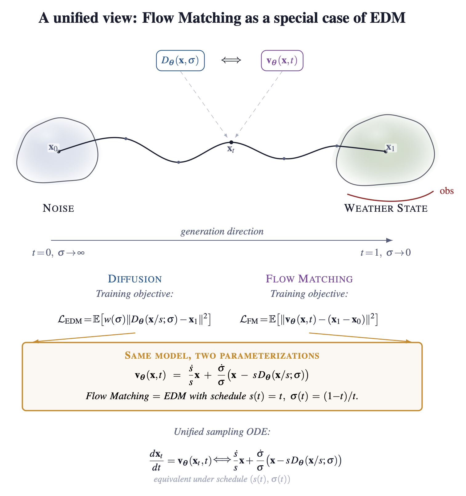
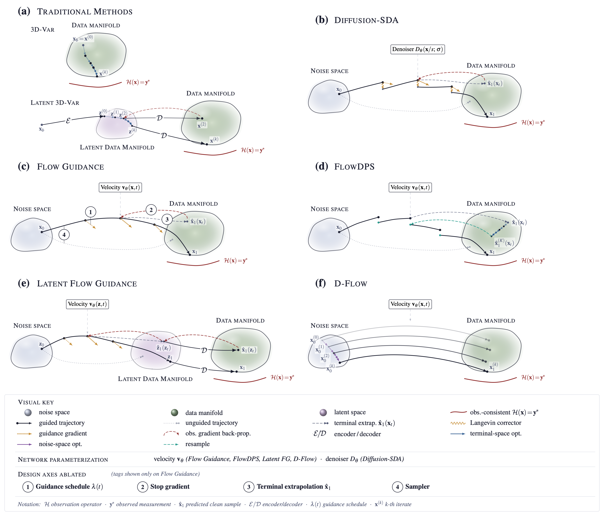
| Data | ERA5 (0.25°), surface variables $u_{10}$, $v_{10}$, $T_{2\mathrm{m}}$, $D_{2\mathrm{m}}$. |
|---|---|
| Observations | 11,849 MADIS ground stations (CONUS), real noisy measurements. |
| Splits | Station-level train / val / test; 1,778 held-out test stations. |
| Evaluation | 360 snapshots from 2023 — dense & sparse protocols. |
| Metric | RMSE reduction over the ERA5 background, averaged across variables. |
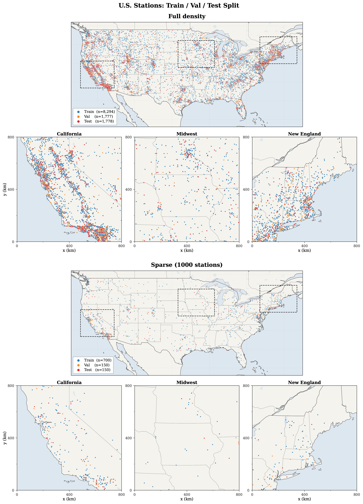
How far do corrections propagate from observation locations?
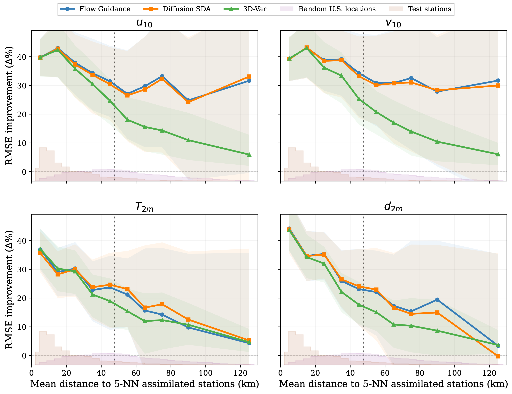
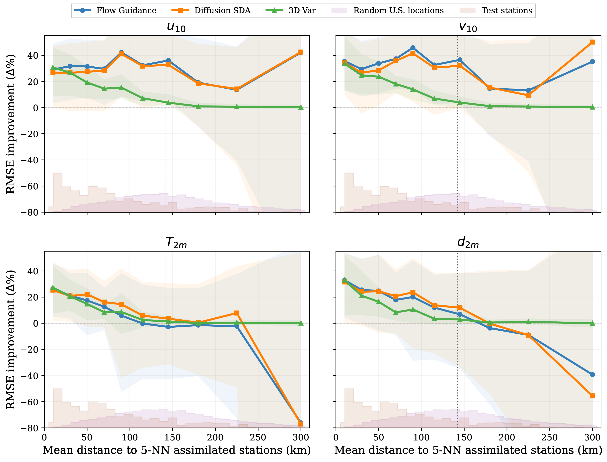
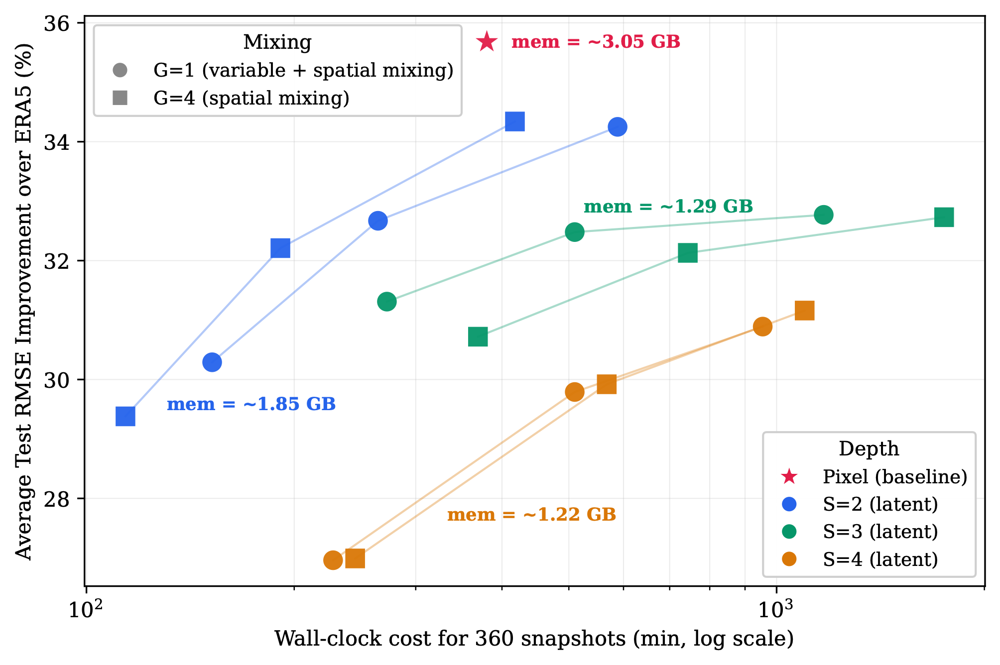
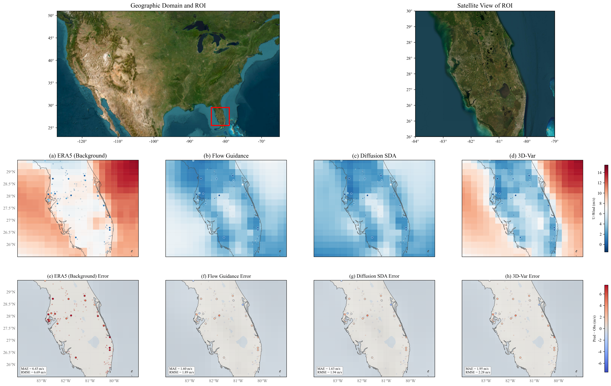
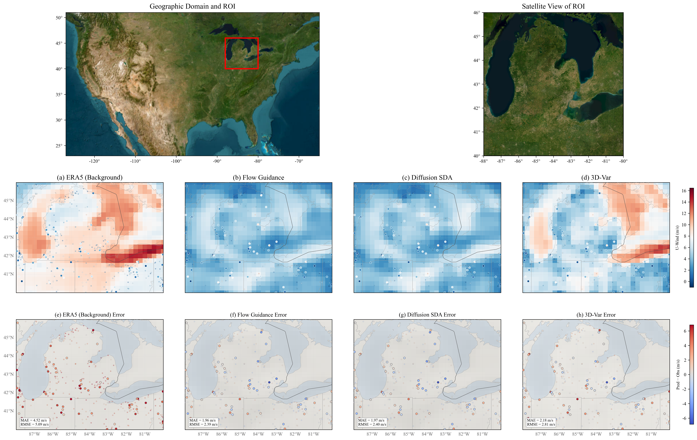
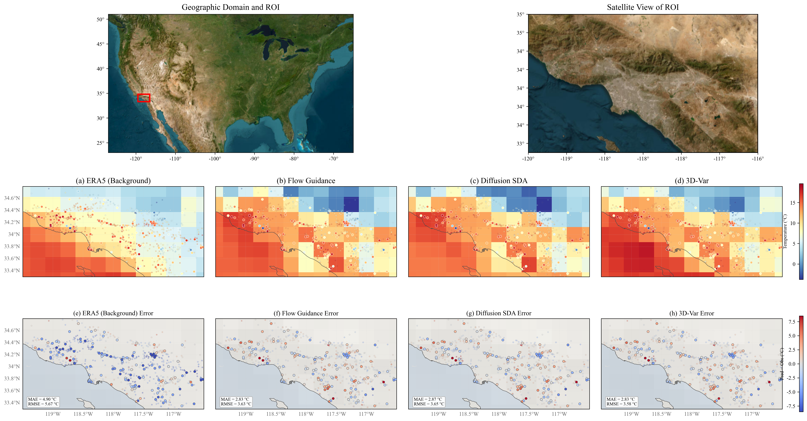
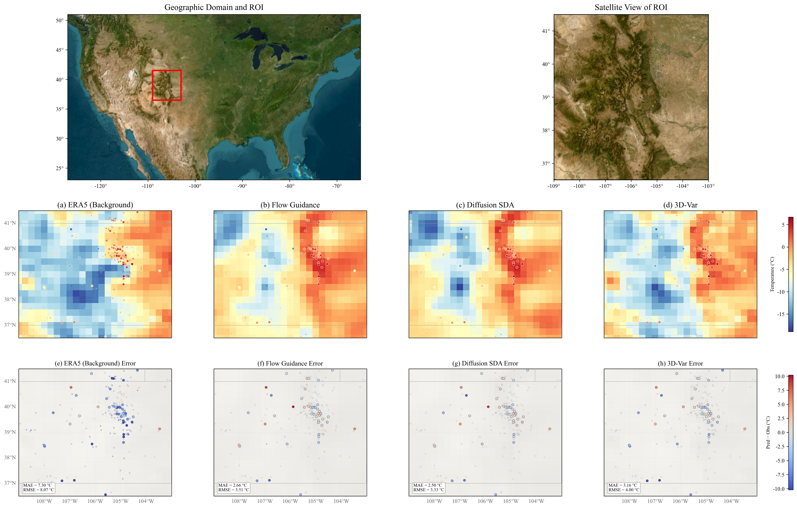
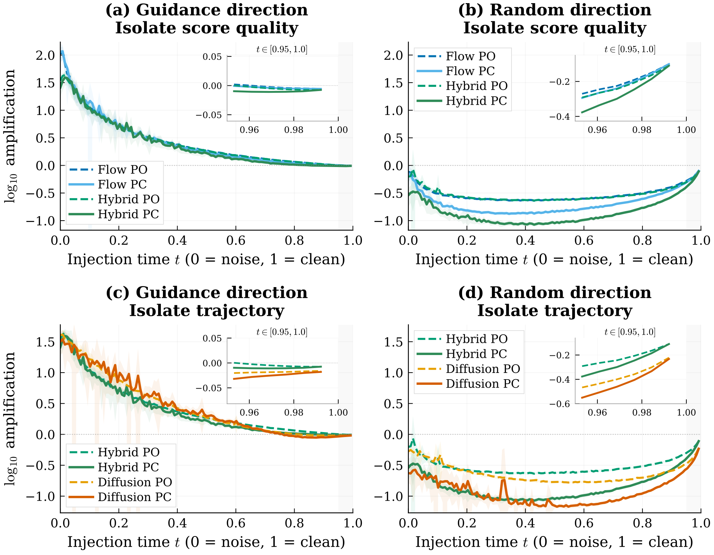
Cite the paper:
@article{huang2025benchmark,
title = {Benchmarking Generative Models for Weather Data Assimilation
on Real Station Observations},
author = {Huang, Ruizhe and Yang, Qidong and Giezendanner, Jonathan and Wang, Sherrie},
year = {2025}
}Cite the thesis:
@mastersthesis{huang2025thesis,
title = {Benchmarking Generative Models for Weather Data Assimilation
on Real Station Observations},
author = {Huang, Ruizhe},
school = {Massachusetts Institute of Technology},
year = {2025},
type = {{S.M.} thesis},
address = {Cambridge, MA, USA}
}